The Fisheries Library in R (FLR) is a collection of tools for quantitative fisheries science, developed in the R language, that facilitates the construction of bio-economic simulation models of fisheries systems as well as the application of a wide range of quantitative analysis.
FLR builds on the powerful R environment and syntax to create a domain-specific language for the quantitative analysis of the expected risks and impacts of fisheries management decisions. The classes and methods in FLR consider uncertainty an integral part of our knowledge of fisheries systems.
To follow this tutorial you should have installed the following packages:
You can do so as follows:
install.packages(c("latticeExtra", "gridExtra", "ggplot2", "triangle", "copula", "coda", "mgcv"))
install.packages(c("FLCore", "ggplotFL", "FLa4a", "FLBRP", "FLash"), repos="http://flr-project.org/R")The FLCore package defines a series of data structures that represent different elements of the fishery system. These structures are defined using R’s S4 class system, while functions to operate on those classes are defined as methods. In this way function call (e.g. plot()) can be used on different classes and their behaviour is consistent with the class structure and content. For further information on the S4 class system, please look at the introductory text on the methods package.
The FLQuant class is the basic data structure for FLR, and it is in essence a 6D array on which data and outputs can be stored, structured along dimensions related to time, space, age or length, etc. It is also able to keep track of the units of measurement employed, as a simple character vector, although various operations on these objects are aware of the units of measurements contained in them.
We will be creating an altering FLQuant objects as we go along, but we can long briefly at some basic operations, as the syntax will then be used in other classes in FLR.
Let’s first load the necessary packages in our session. The FLCore paxckage
library(FLCore)
library(ggplotFL)As it is the case for R classes, for example data.frame, classes in FLR can be constructed using a constructor method with the same name as the class, in this case FLQuant().
FLQuant(1:10)An object of class "FLQuant"
, , unit = unique, season = all, area = unique
year
quant 1 2 3 4 5 6 7 8 9 10
all 1 2 3 4 5 6 7 8 9 10
units: NA The FLQuant constructor can take a variety of inputs, like a vector, a matrix or an array, and also allows you to specify a nuber of arguments. We will only look now at three of them, units for the units of measurement, quant for the name of the first dimension, and dimnames for the dimension names of the object. For example, to construct an object holding (random) data in tonnes on catches for ages 1 to 4, over a period of 6 years, one could call
flq <- FLQuant(rlnorm(60), dimnames=list(age=1:4, year=2012:2017), units="t")
flqAn object of class "FLQuant"
, , unit = unique, season = all, area = unique
year
age 2012 2013 2014 2015 2016 2017
1 0.60352 0.97440 0.99065 1.68515 1.36443 5.05653
2 1.93833 2.09946 3.13919 0.84972 0.53418 0.69980
3 0.24826 1.51710 5.28007 0.61229 0.59522 1.19544
4 3.14748 6.16351 1.06234 0.93561 1.43151 0.81529
units: t The object has six dimensions, although some of them (unit, season, area and iter) ar not used in this case. We can inspect the object in various ways
# A summary of structure and data
summary(flq)An object of class "FLQuant" with:
dim : 4 6 1 1 1 1
quant: age
units: t
Min : 0.2482592
1st Qu.: 0.7864159
Mean : 1.789145
Median : 1.12889
3rd Qu.: 1.978613
Max : 6.163509
NAs : 0 %# dimnames
dimnames(flq)$age
[1] "1" "2" "3" "4"
$year
[1] "2012" "2013" "2014" "2015" "2016" "2017"
$unit
[1] "unique"
$season
[1] "all"
$area
[1] "unique"
$iter
[1] "1"# dims
dim(flq)[1] 4 6 1 1 1 1# units
units(flq)[1] "t"It can be also subset and modified
# Extract first year
flq[, 1]An object of class "FLQuant"
, , unit = unique, season = all, area = unique
year
age 2012
1 0.60352
2 1.93833
3 0.24826
4 3.14748
units: t # Extract year 2013
flq[, "2013"]An object of class "FLQuant"
, , unit = unique, season = all, area = unique
year
age 2013
1 0.9744
2 2.0995
3 1.5171
4 6.1635
units: t # Set catches on age 1 to zero
flq[1,] <- 0
flqAn object of class "FLQuant"
, , unit = unique, season = all, area = unique
year
age 2012 2013 2014 2015 2016 2017
1 0.00000 0.00000 0.00000 0.00000 0.00000 0.00000
2 1.93833 2.09946 3.13919 0.84972 0.53418 0.69980
3 0.24826 1.51710 5.28007 0.61229 0.59522 1.19544
4 3.14748 6.16351 1.06234 0.93561 1.43151 0.81529
units: t as it can be used in many operations
# Product with scalar
flq * 10An object of class "FLQuant"
, , unit = unique, season = all, area = unique
year
age 2012 2013 2014 2015 2016 2017
1 0.0000 0.0000 0.0000 0.0000 0.0000 0.0000
2 19.3833 20.9946 31.3919 8.4972 5.3418 6.9980
3 2.4826 15.1710 52.8007 6.1229 5.9522 11.9544
4 31.4748 61.6351 10.6234 9.3561 14.3151 8.1529
units: NA # Addition with another FLQuant
flq + (flq * 0.20)An object of class "FLQuant"
, , unit = unique, season = all, area = unique
year
age 2012 2013 2014 2015 2016 2017
1 0.00000 0.00000 0.00000 0.00000 0.00000 0.00000
2 2.32600 2.51935 3.76703 1.01966 0.64102 0.83976
3 0.29791 1.82052 6.33608 0.73475 0.71427 1.43453
4 3.77698 7.39621 1.27480 1.12273 1.71781 0.97834
units: t # Sum along years
yearSums(flq)An object of class "FLQuant"
, , unit = unique, season = all, area = unique
year
age 1
1 0.0000
2 9.2607
3 9.4484
4 13.5557
units: t To learn more about the class, check the FLQuant help page.
The first step in an analysis is to get the relevant data into the system. We will need to construct objects of certain FLR classes, but first data is loaded into the R session using any of the tools available in the language: read.csv for CSV files, readVPA and others for fisheries legacy file formats, …
In this example we will create an object of class FLStock, a representation of both inputs and outputs involved in fitting a stock assessment model, from a CSV file containing a table with five columns:
The file is downloaded into a temporary folder, and uncompressed. Simply change the value of dir to save the file in another folder.
dir <- tempdir()
download.file("http://www.flr-project.org/doc/src/ple4.csv.zip", file.path(dir, "ple4.csv.zip"))
unzip(file.path(dir, "ple4.csv.zip"), exdir=dir)The CSV file can now be loaded as a data.frame using read.csv and inspected
dat <- read.csv(file.path(dir, "ple4.csv"))
head(dat)| slot | age | year | data | units |
|---|---|---|---|---|
| discards.n | 1 | 1957 | 32356 | 1000 |
| discards.n | 2 | 1957 | 45596 | 1000 |
| discards.n | 3 | 1957 | 9220 | 1000 |
| discards.n | 4 | 1957 | 909 | 1000 |
| discards.n | 5 | 1957 | 961 | 1000 |
| discards.n | 6 | 1957 | 25 | 1000 |
This data.frame contains the time series of landings and discards at age, in thousands, and the corresponding mean weights-at-age, in kg, for North Sea plaice (Pleuronectes platessa, ICES ple.27.420).
We can create an object to store the landings-at-age data by subsetting it from the data.frame
landn <- subset(dat, slot=="landings.n", select=-slot)and then convert into an FLQuant using
landsn <- as.FLQuant(landn)The object can now be inspected and plotted using the FLR-defined methods
summary(landsn)An object of class "FLQuant" with:
dim : 10 52 1 1 1 1
quant: age
units: 1000
Min : 0
1st Qu.: 4548.25
Mean : 28140.75
Median : 14029.5
3rd Qu.: 40536
Max : 274209
NAs : 0 %plot(landsn)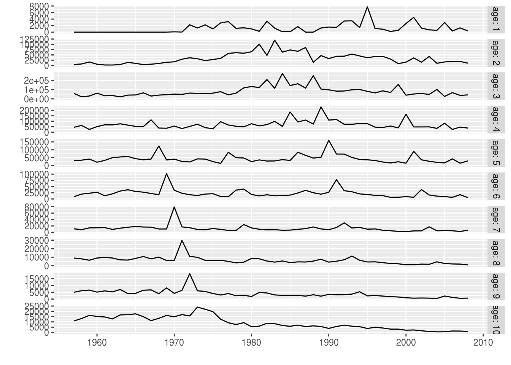
In a similar way, we can now convert the input data.frame, containing data for four data elements, as specified in the slots column, into an FLStock object, ple4
nple4 <- as.FLStock(dat)
summary(nple4)An object of class "FLStock"
Name:
Description:
Quant: age
Dims: age year unit season area iter
10 52 1 1 1 1
Range: min max pgroup minyear maxyear minfbar maxfbar
1 10 10 1957 2008 1 10
catch : [ 1 52 1 1 1 1 ], units = NA
catch.n : [ 10 52 1 1 1 1 ], units = NA
catch.wt : [ 10 52 1 1 1 1 ], units = NA
discards : [ 1 52 1 1 1 1 ], units = NA
discards.n : [ 10 52 1 1 1 1 ], units = 1000
discards.wt : [ 10 52 1 1 1 1 ], units = kg
landings : [ 1 52 1 1 1 1 ], units = NA
landings.n : [ 10 52 1 1 1 1 ], units = 1000
landings.wt : [ 10 52 1 1 1 1 ], units = kg
stock : [ 1 52 1 1 1 1 ], units = NA
stock.n : [ 10 52 1 1 1 1 ], units = NA
stock.wt : [ 10 52 1 1 1 1 ], units = NA
m : [ 10 52 1 1 1 1 ], units = m
mat : [ 10 52 1 1 1 1 ], units =
harvest : [ 10 52 1 1 1 1 ], units = NA
harvest.spwn : [ 10 52 1 1 1 1 ], units =
m.spwn : [ 10 52 1 1 1 1 ], units = To complete this FLStock object we will need to specify the natural mortality, m, in this case as a constant value of 0.1 for all ages and years,
m(nple4) <- 0.1the proportion of natural and fishing mortality that takes place before spawning, assumed to be zero in both cases,
m.spwn(nple4) <- harvest.spwn(nple4) <- 0and the maturity at age, as the proportion mature, as a vector repeated for all years.
mat(nple4) <- c(0, 0.5, 0.5, rep(1, 7))We now must compute the overall landings and discards, in biomass, from the age-disaggregated values,
landings(nple4) <- computeLandings(nple4)
discards(nple4) <- computeDiscards(nple4)and then the catch slots from both landings and discards
catch(nple4) <- computeCatch(nple4, slot="all")The mean weigth-at-age in the stock needs to be provided. In this case we will assume it is the same as the one computed from the catch sampling programme
stock.wt(nple4) <- catch.wt(nple4)We finalize by specifying the fully selected age range, used in the calculation of an overall index of fishing mortality, for example as the mean, using fbar(), or as the maximum value, using fapex() across those ages. This information is part of the object’s range.
range(nple4, c("minfbar", "maxfbar")) <- c(2, 6)If we now inspect the resulting object we can see that all calculated slots have been assigned the corresponding units of measurement, except for those that will hold the estimates coming from a stock assessment model: stock, stock.n and stock.wt for the estimates of abundance, and harvest for the estimates of fishing mortality at age.
summary(nple4)An object of class "FLStock"
Name:
Description:
Quant: age
Dims: age year unit season area iter
10 52 1 1 1 1
Range: min max pgroup minyear maxyear minfbar maxfbar
1 10 10 1957 2008 2 6
catch : [ 1 52 1 1 1 1 ], units = t
catch.n : [ 10 52 1 1 1 1 ], units = 1000
catch.wt : [ 10 52 1 1 1 1 ], units = kg
discards : [ 1 52 1 1 1 1 ], units = t
discards.n : [ 10 52 1 1 1 1 ], units = 1000
discards.wt : [ 10 52 1 1 1 1 ], units = kg
landings : [ 1 52 1 1 1 1 ], units = t
landings.n : [ 10 52 1 1 1 1 ], units = 1000
landings.wt : [ 10 52 1 1 1 1 ], units = kg
stock : [ 1 52 1 1 1 1 ], units = NA
stock.n : [ 10 52 1 1 1 1 ], units = NA
stock.wt : [ 10 52 1 1 1 1 ], units = kg
m : [ 10 52 1 1 1 1 ], units = m
mat : [ 10 52 1 1 1 1 ], units =
harvest : [ 10 52 1 1 1 1 ], units = NA
harvest.spwn : [ 10 52 1 1 1 1 ], units =
m.spwn : [ 10 52 1 1 1 1 ], units = plot(metrics(nple4, Catch=catch, Landings=landings))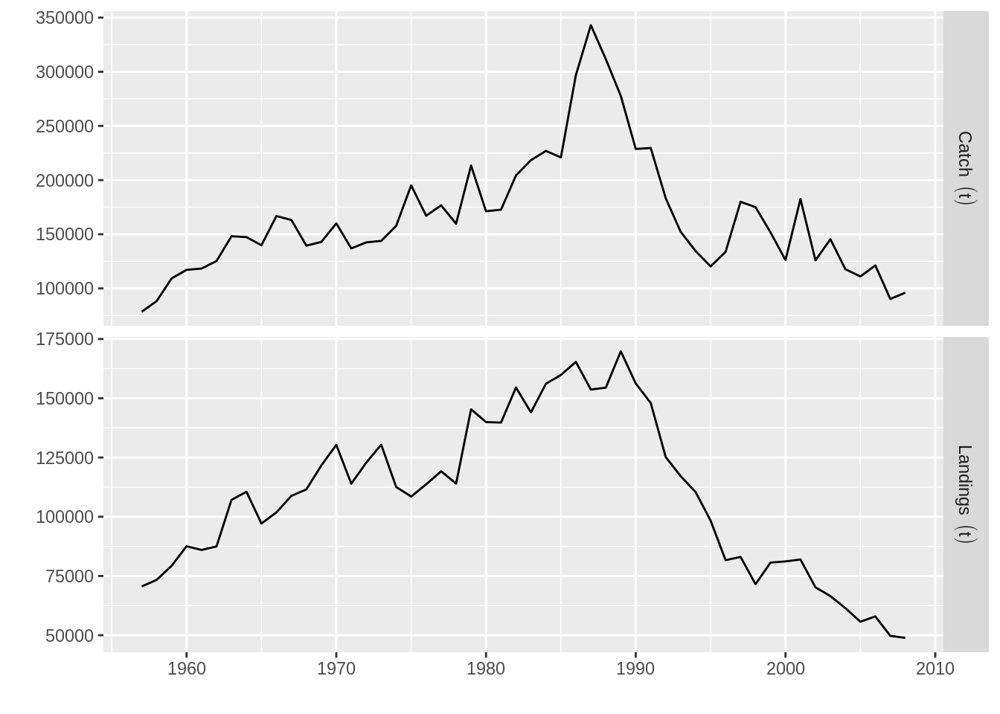
data(ple4)Please see the Loading your data into FLR tutorial for more examples on how to get your data into into FLR.
As already shown, FLR classes have always a plot methods defined that provide a basic visual exploration of the object contents. But you are not limited to those plots, and other methods are available to allow you to build the plots you need.
The FLCore package provides a set of those plot methods based on R’s lattice package, as well as versions of lattice’s methods that work directly on FLR objects, for example xyplot
xyplot(data~year|age, harvest(ple4), xlab="", ylab="", type="b", cex=0.5, pch=19)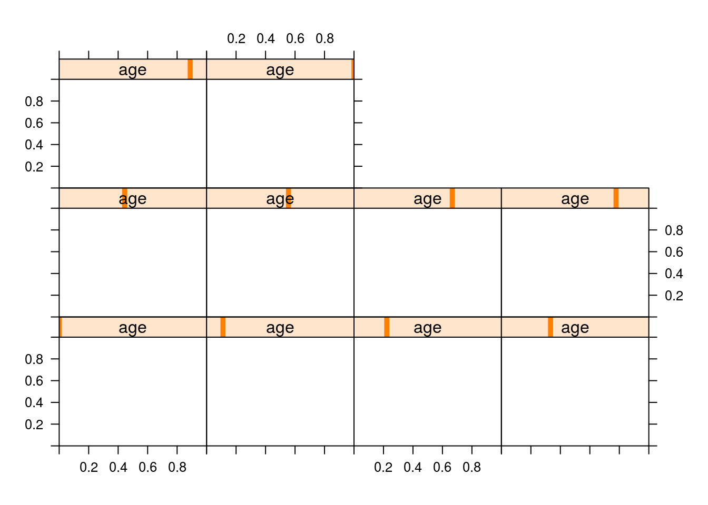
But the ggplotFL package, which we have already loaded, provides a new set of plot methods based on ggplot2, from which all the plots shown so far in this tutorial have been generated.
One important advantage of ggplot2 is that plots are returned as objects that can be modified and extended. For example, the basic plot for the abundances at age FLQuant using ggplotFL would be this one
plot(stock.n(ple4))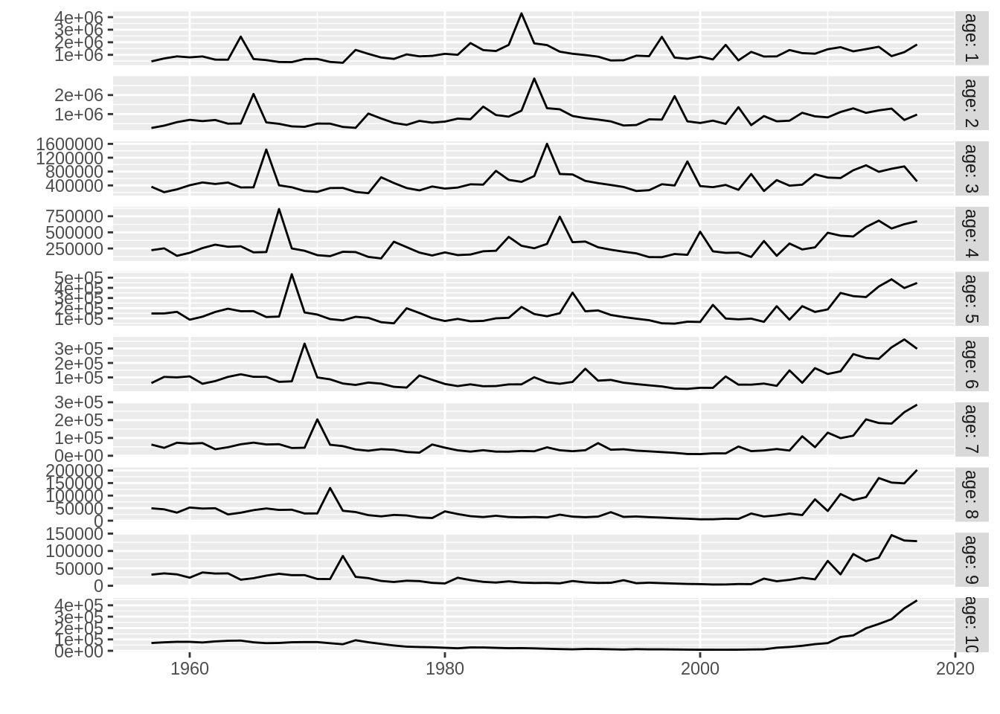
in which each age is shown in a different horizontal panel (facet). Now we can modify this plot in various ways by adding extra ggplot2 commands to it, for example by adding a label to the y axis, shading a certain period of interest
plot(stock.n(ple4)) +
# Add y label
ylab("Biomass (t)") +
# Draw rectangle between years 1990 and 2000
annotate("rect", xmin = 1990, xmax = 2000, ymin = 0, ymax = Inf,
# in semi-transparent red
alpha = .2, fill='red')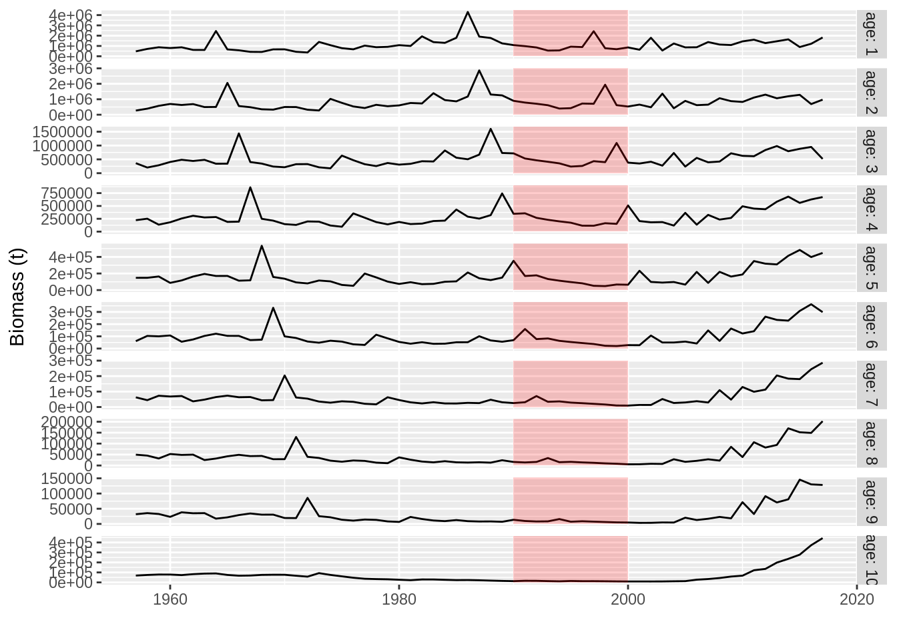
The basic method in ggplot2 taking a data input, ggplot, has also been defined for some FLCore class, which simpliefies constructing plots based on objects of those classes from scratch. For example, we can plot our catch-at-age matrix from ple4 to show the signal of strong cohorts in the data using
ggplot(data=catch.n(ple4), aes(x=year, y=data, group=age)) +
geom_line(aes(colour=as.factor(age))) +
ylab("Total catch (t)") + xlab("") + theme(legend.position="none")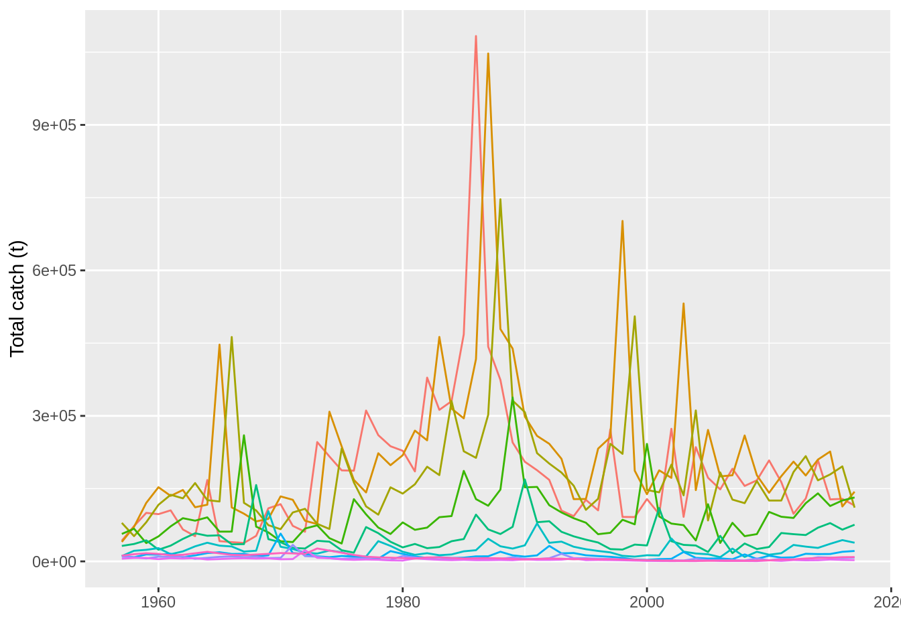
ggplotFL deals with multiple iterations in FLR objects by calculating quantiles along the iter dimension and plotting them as areas and lines. For example, an object with random lognormal noise around the catch time series would look like this
plot(rlnorm(250, log(catch(ple4)), 0.5))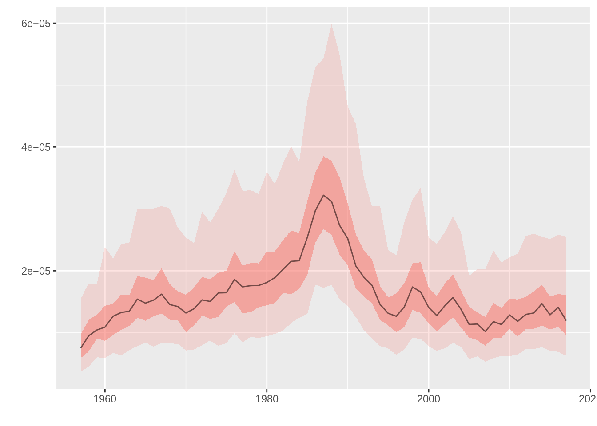
where the 50% and 95% intervals are shown as a red region and a dotted line respectively, while the median value is shown as a black line.
Note that plot methods on both FLCore and ggplotFL work by converting various FLR objects to a class that lattice and gplot2 can understand, data.frames. Coercing a 6D array like an FLQuant to a 2D data.frame requires generating one column per dimension, named as those, plus an extra column for the values stored in the object. This column is named data, thus the use of data in various plot formulas above. For classes with multiple slots, like FLStock, an extra column is necessary, which will be called slots. Please check this help page to know more about the coertion methods for FLR objects.
For further explanations on the use of the two plotting platforms available for FLR classes, please refer to the ggplotFL plotting FLR objects with ggplot2 and Plotting FLR objects using lattice tutorials.
An important step in providing management advice for a fish stock is the estimation of current status, past history and stock productivity through an stock assessment (SA) model. The FLStock object we have created contains some of the inputs required for most SA models: catches, natural mortality, and maturity. What is now needed is some indication of changes in abundance over the period of exploitation, an index of abundance, derived from either research surveys or catch-per-unit-effort of commercial fleets.
An index of abundance for the North Sea plaice stock, as an object of class FLIndex, is available as an example dataset in FLCore, and can be loaded using the data command
data(ple4.index)This time series of abundances at age, covering from 1996 to 2017, was obtained during the ICES International Bottom Trawl Survey, as is one of the indices used by the Working Group on the Assessment of Demersal Stocks in the North Sea and Skagerrak (WGNSSK).
The FLIndex class is able to contain not only the index of abundance, in this case as an age-structured FLQuant, but also other information on variance, associated catches, effort, selectivity and catchability, which might be used by certain methods.
summary(ple4.index)An object of class "FLIndex"
Name: BTS-Combined (all)
Description: Plaice in IV . Imported from VPA file.
Type : numbers
Distribution :
Quant: age
Dims: age year unit season area iter
10 22 1 1 1 1
Range: min max pgroup minyear maxyear startf endf
1 10 1 1996 2017 0.6453376 0.6453376
index : [ 10 22 1 1 1 1 ], units = NA
index.var : [ 10 22 1 1 1 1 ], units = NA
catch.n : [ 10 22 1 1 1 1 ], units = NA
catch.wt : [ 10 22 1 1 1 1 ], units = NA
effort : [ 1 22 1 1 1 1 ], units = NA
sel.pattern : [ 10 22 1 1 1 1 ], units = NA
index.q : [ 10 22 1 1 1 1 ], units = NA plot(ple4.index)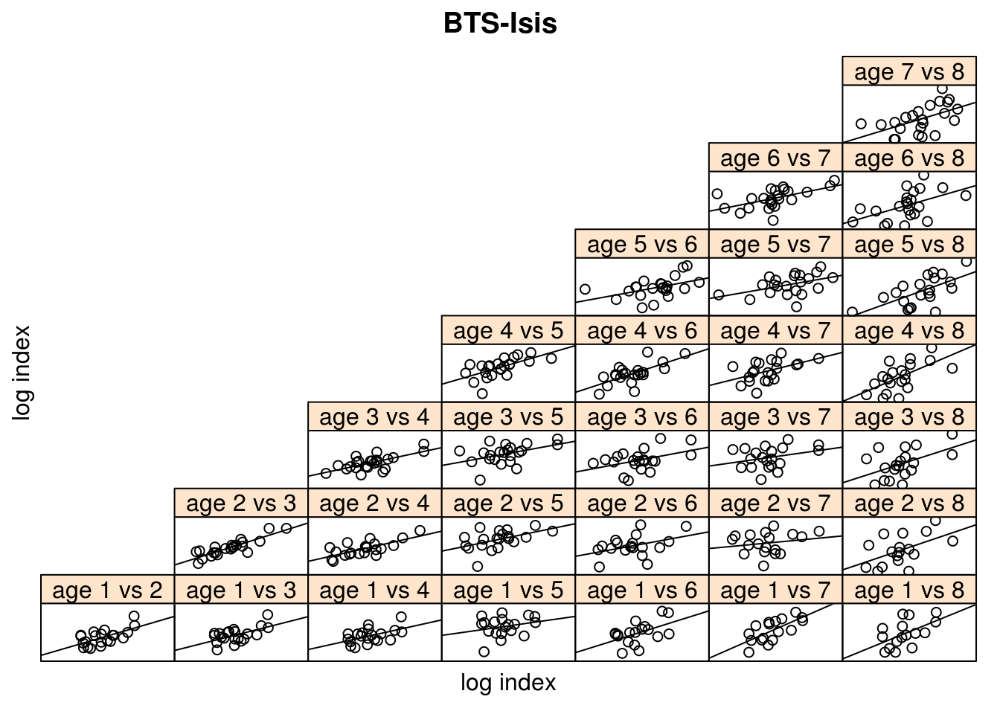
The range slot in this class contains information about the time period over which the survey takes place, as proportions of the year, in this case from the beginning of August to the end of September.
range(ple4.index)[c("startf", "endf")] startf endf
0.6453376 0.6453376 The FLa4a package provides an FLR implementation of the a4a model, an statistical catch-at-age model of medium complexity that has been designed to make use of the power and flexibility of R’s formula-based model notation (as used for example in lm), while giving access to a solid and fast minimization algorithm implemented using AD Model Builder.
library(FLa4a)A first go at fitting this model to the ple4 and ple4.index datasets requires a single line of code
fit <- sca(ple4, FLIndices(BTS=ple4.index))This returns an object of class a4aFitSA that contains the results fo the model fit, including the estimated catch-at-age, and the derived abundances and fishing mortality at age
summary(fit)An object of class "a4aFitSA"
Name: PLE
Description: Plaice in IV. ICES WGNSSK 2018. FLAAP
Quant: age
Dims: age year unit season area iter
10 61 1 1 1 1
Range: min max pgroup minyear maxyear minfbar maxfbar
1 10 10 1957 2017 2 6
stock.n : [ 10 61 1 1 1 1 ], units = 1000
harvest : [ 10 61 1 1 1 1 ], units = f
catch.n : [ 10 61 1 1 1 1 ], units = 1000 which we can use to update the FLStock object
stk <- ple4 + fit
plot(stk)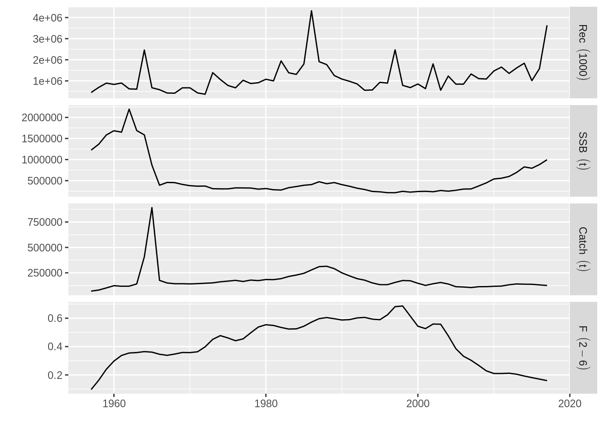
Among other methods, FLa4a provides a range of tools for inspecting the quality of the model fit. For example, a set of residuals, for the fits to both the index olf abundance and
Fitting a model for the relationship between stock abundance and expected recruitment is necessary for forecasting the future dynamics of the stock under various levels of fishing mortality, the central element of fisheries management advice. Certain stock assessment models, for example most statistical catch-at-age models, include the stock-recruitment model in the estimated parameters, but for others, like Virtual Population Analysis, this is a setup carried out once the stock of population abundace have been obtained.
Both inputs and outputs for stock-recruitment models are stored in an object of the FLSR class which we can create directly from the SA results by coertion using
plsr <- as.FLSR(stk)The resulting FLSR object contains the series of recruitment rec, the abundance of the first age, and the stock reproductive potential, in this case the spawning stock biomass ssb. Both series are already displaced as corresponds by the age of recruitment, 1 in this case.
summary(plsr)An object of class "FLSR"
Name: PLE
Description: 'rec' and 'ssb' slots obtained from a 'FLStock' object
Quant: age
Dims: age year unit season area iter
1 60 1 1 1 1
Range: min minyear max maxyear
1 1958 1 2017
rec : [ 1 60 1 1 1 1 ], units = 1000
ssb : [ 1 60 1 1 1 1 ], units = kg
residuals : [ 1 60 1 1 1 1 ], units = NA
fitted : [ 1 60 1 1 1 1 ], units = 1000
Model: list()
Parameters:
params
iter
1
Log-likelihood: NA(NA)
Variance-covariance: <0 x 0 matrix>We now need to choose a model to fit, and FLCore provides a number of them already defined in terms of:
model slotlogl slotinitial slotSee the SR Models help page for further details of the available models.
We can now assign the output of the chosen model function, in this case ricker() to the existing object using
model(plsr) <- ricker()The model object is ready to fit, through Maximum Likelihood Estimation (MLE), using the fmle method defined in FLCore. This makes use of R’s optim, but defaults to the Melder-Mead algorithm.
plsr <- fmle(plsr)Another look at the object ill show us that a number of slots now contain the results of the model fit, among them:
fitted for the estimated recruitment, as an FLQuantresiduals for the residuals in log space, FLQuantparams for the estimated parameters, as an object of class FLParvcov for the variance-covariance matrix, as an arrayThe standard plot for the class shows the model fit and a series of useful diagnostics that will help us evaluating the its quality and usefulness for future projections. This can be further explored by likelihood profiling over a range of values of the estimated parameters, simply calling the profile method of the object
profile(plsr)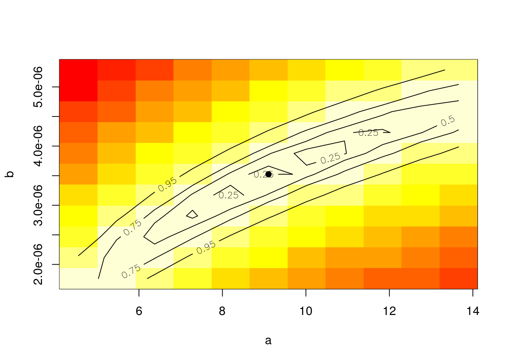
Finally, the model can be used to predict future recruitments if provided with a set of new of values of SSB, as in
predict(plsr, ssb=FLQuant(rnorm(10, 25e4, sd(ssb(plsr))), dimnames=list(age=1, year=2008:2017)))An object of class "FLQuant"
, , unit = unique, season = all, area = unique
year
age 2008 2009 2010 2011 2012 2013 2014
1 -10008692 1322964 45880 957730 893855 872758 -1209982
year
age 2015 2016 2017
1 805894 -1329512 1032422
units: 1000 Please see the Modelling stock recruitment with FLSR tutorial for more examples and information on the stock-recruitment model fitting capabilities of FLR.
To assess current and future status of a stock we need reference points which he hold to represent desirable states for the stock, usually either in terms of stock abundance, like \(B_{MSY}\), the biomass expected to produce, on average and under the current exploitation pattern, the Maximum Sustainable Yield (\(MSY\)), or of fishing mortality, such as the fishing mortality expected to produce \(MSY\), \(F_{MSY}\).
We can use the FLBRP package to calculate a large set of reference points, once we have an estimate of stock status, our FLStock object, and of the stock-recruitment relationship, FLSR. We can use them both to create the necessary object, of class FLBRP, after loading the package
library(FLBRP)
plrp <- FLBRP(stk, sr=plsr)
summary(plrp)An object of class "FLBRP"
Name:
Description:
Quant: age
Dims: age year unit season area iter
10 101 1 1 1 1
Range: min max pgroup minfbar maxfbar
1 10 10 2 6
fbar : [ 1 101 1 1 1 1 ], units = f
fbar.obs : [ 1 61 1 1 1 1 ], units = f
landings.obs : [ 1 61 1 1 1 1 ], units = t
discards.obs : [ 1 61 1 1 1 1 ], units = t
rec.obs : [ 1 61 1 1 1 1 ], units = 1000
ssb.obs : [ 1 61 1 1 1 1 ], units = t
stock.obs : [ 1 61 1 1 1 1 ], units = t
profit.obs : [ 1 61 1 1 1 1 ], units = NA
landings.sel : [ 10 1 1 1 1 1 ], units = NA
discards.sel : [ 10 1 1 1 1 1 ], units = NA
bycatch.harv : [ 10 1 1 1 1 1 ], units = f
stock.wt : [ 10 1 1 1 1 1 ], units = kg
landings.wt : [ 10 1 1 1 1 1 ], units = kg
discards.wt : [ 10 1 1 1 1 1 ], units = kg
bycatch.wt : [ 10 1 1 1 1 1 ], units = NA
m : [ 10 1 1 1 1 1 ], units = m
mat : [ 10 1 1 1 1 1 ], units =
harvest.spwn : [ 10 1 1 1 1 1 ], units =
m.spwn : [ 10 1 1 1 1 1 ], units =
availability : [ 10 1 1 1 1 1 ], units = NA
price : [ 10 1 1 1 1 1 ], units = NA
vcost : [ 1 1 1 1 1 1 ], units = NA
fcost : [ 1 1 1 1 1 1 ], units = NA
Model: rec ~ a * ssb * exp(-b * ssb)
Parameters:
params
iter a b
1 4.81 1.33e-06
refpts: calculated An object of the FLBRP class contains a series of times series of observations on dynamics of both stock and fishery, as well as average quantities computed along an specified time period. A series of slot are designed to contain economic variables, such as price, variable costs (vcost) and fixed costs (fcost), which will need to be provided. When those data are available, economic reference points can also be calculated. Finally, a vector of fishing mortality values, fbar, has been created, by default to be of length 101 and with values going from \(F=0\) to \(F=4\), to be used in the calculation procedure.
We can now proceed with the calculation of reference points, through the brp method
plrp <- brp(plrp)and the extraction of the values obtained, stored in the refpts slot of the object
refpts(plrp)An object of class "FLPar"
quant
refpt harvest yield rec ssb biomass revenue cost
virgin 0.00e+00 0.00e+00 6.14e+05 2.10e+06 2.16e+06 NA NA
msy 2.63e-01 1.03e+05 1.31e+06 8.89e+05 1.01e+06 NA NA
crash 5.10e-01 9.18e-07 1.71e-05 3.56e-06 4.87e-06 NA NA
f0.1 1.52e-01 8.28e+04 1.06e+06 1.37e+06 1.47e+06 NA NA
fmax 2.05e-01 9.73e+04 1.20e+06 1.13e+06 1.25e+06 NA NA
spr.30 1.91e-01 9.43e+04 1.17e+06 1.20e+06 1.31e+06 NA NA
mey NA NA NA NA NA NA NA
quant
refpt profit
virgin NA
msy NA
crash NA
f0.1 NA
fmax NA
spr.30 NA
mey NA
units: NA This slot contains the estimates for a series of reference points and for a number of quantities. For example, the value stored at the intersection of msy and harvest corresponds to \(F_{MSY}\), while that of virgin and ssb is the estimate of virgin stock biomass. We can, for example, extract the two standard MSY-related reference points as a named vector using
pmsy <- refpts(plrp)["msy", c("harvest", "ssb"), drop=TRUE]to then use them to visualize the status of the stock in relation to these points, for example
plot(ssb(stk) / pmsy["ssb"]) + geom_hline(aes(yintercept=1), linetype=2) +
ylab(expression(SSB / SSB[MSY]))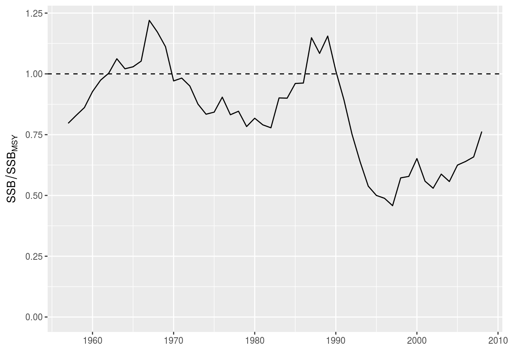
For more information on FLBRP, please see the Reference points for fisheries management with FLBRP tutorial.
Our final step in this quick tour takes us to the tools in FLR for forecasting the future responses of the stock to alternative management decisions. This example concerns a Short Term Forecast, in which the effect of the current management, for example a maximum catch limit or TAC, on the present year is forecasted, and then a series of alternative increases or decreases in catch are applied to the object representing our current understanding of the stock status and dynamics.
The FLash package contains the current implementation of the forecasting mechanism in FLR. Please note that FLash is currently only working on 32 bit R if using Windows. A new forecasting package, called FLasher is about to be released and will only work on 64 bit R.
library(FLash)The key element in the FLash interface is the fwdControl class, which allows us to specify the targets and limits that we want the stock to achieve or remain within. But first we need to make some assumptions about the future values of certain quantities, both on the biology (natural mortality, maturity) and the fishery (selectivity, proportion of discards). A common approach for this kind of forecast is to use averages over the last few years (tipycally three) for certain quantities. This can be done in FLR using the stf method in the FLash package.
library(FLash)
proj <- stf(stk)Our new object extends up to 2020, and the values for certain stocks have been extended using the mean of the last three years, for example for the weight-at-age in the stock
stock.wt(proj)[, ac(2011:2020)]An object of class "FLQuant"
, , unit = unique, season = all, area = unique
year
age 2011 2012 2013 2014 2015 2016 2017
1 0.039000 0.052000 0.043000 0.048000 0.024000 0.030000 0.032000
2 0.100000 0.093000 0.107000 0.104000 0.065000 0.066000 0.069000
3 0.187000 0.142000 0.153000 0.158000 0.120000 0.117000 0.132000
4 0.209000 0.188000 0.208000 0.202000 0.207000 0.198000 0.181000
5 0.355000 0.331000 0.320000 0.312000 0.279000 0.260000 0.270000
6 0.483000 0.393000 0.354000 0.380000 0.323000 0.329000 0.333000
7 0.438000 0.484000 0.434000 0.439000 0.379000 0.380000 0.359000
8 0.422000 0.479000 0.493000 0.484000 0.435000 0.434000 0.458000
9 0.530000 0.480000 0.662000 0.458000 0.465000 0.479000 0.476000
10 0.580000 0.518000 0.468000 0.615000 0.457000 0.514000 0.557000
year
age 2018 2019 2020
1 0.028667 0.028667 0.028667
2 0.066667 0.066667 0.066667
3 0.123000 0.123000 0.123000
4 0.195333 0.195333 0.195333
5 0.269667 0.269667 0.269667
6 0.328333 0.328333 0.328333
7 0.372667 0.372667 0.372667
8 0.442333 0.442333 0.442333
9 0.473333 0.473333 0.473333
10 0.509333 0.509333 0.509333
units: kg We can now construct a fwdControl object that projects the stock as if catches in the current year, 2018 in this case, were those of the agreed TAC, 85,000 t, and F was then kept in 2019 and 2020 at the same levels as in 2017. The main component of a fwdControl object is a data.frame that must at least contains columns for
ssb, f or catchTAC <- 85000
Flevel <- fbar(stk)[,"2017"]
ctrl <- fwdControl(data.frame(year=2018:2020, quantity=c("catch", "f", "f"), val=c(TAC, Flevel, Flevel)))Now the fwd method will carry ou the projection using those three object: stock, stock-recruitment and control
proj <- fwd(proj, control=ctrl, sr=plsr) and the results can be visualized
plot(proj) + geom_vline(aes(xintercept=2017.5), linetype=2)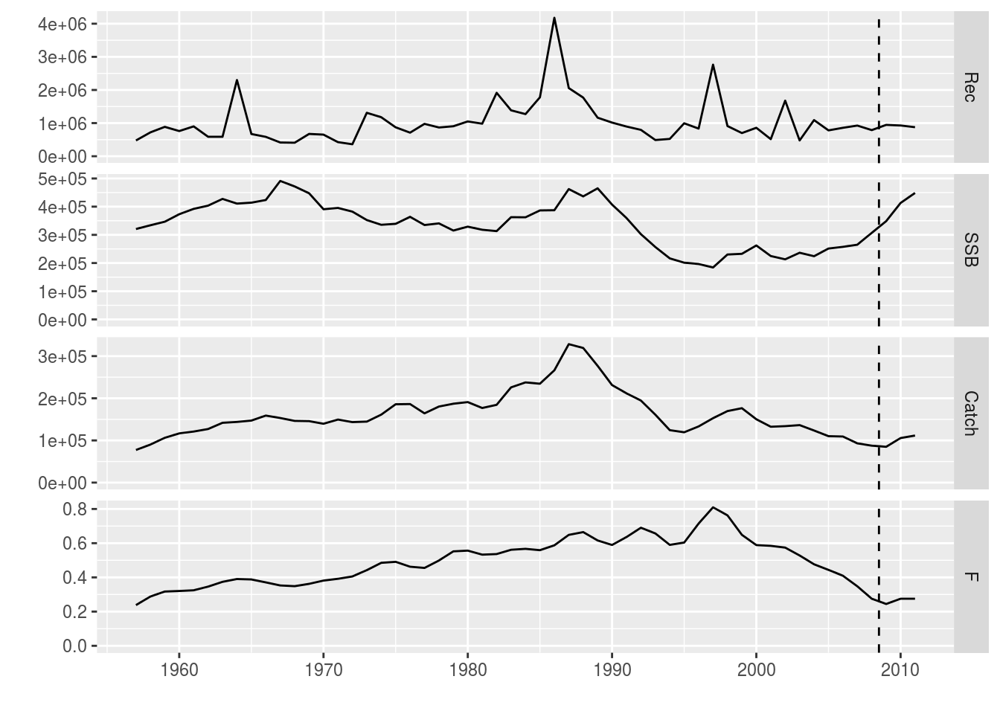
Please see the Short Term Forecasting for advice using FLash and Short Term Forecasting for advice using FLash tutorials for more examples on how to use the capabilitis of FLash to forecast population dynamics under various scenarios.
Please visit our website for more information on the FLR packages, tutorials and examples of use, and instructions for getting in touch if you want to report a bug, ask a question or get involved in the development of the FLR toolset. The project is run by a team of fisheries scientists that decided to share the R code they were writing and using so a common platform for Quantitative Fisheries Science in R could break the Babel tower spell that J. Schnute first identified
“The cosmic plan for confounding software languages seems to be working remarkably well among the community of quantitative fishery scientists!”
Schnute et al. 2007
L. T. Kell, I. Mosqueira, P. Grosjean, J-M. Fromentin, D. Garcia, R. Hillary, E. Jardim, S. Mardle, M. A. Pastoors, J. J. Poos, F. Scott, R. D. Scott; FLR: an open-source framework for the evaluation and development of management strategies. ICES J Mar Sci 2007; 64 (4): 640-646. doi: 10.1093/icesjms/fsm012.
This document is licensed under the Creative Commons Attribution-ShareAlike 4.0 International license.